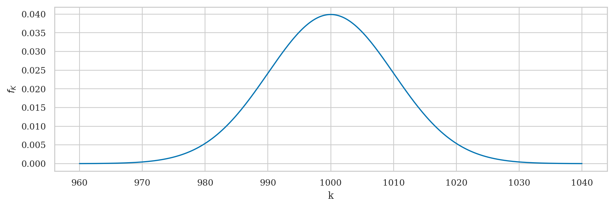
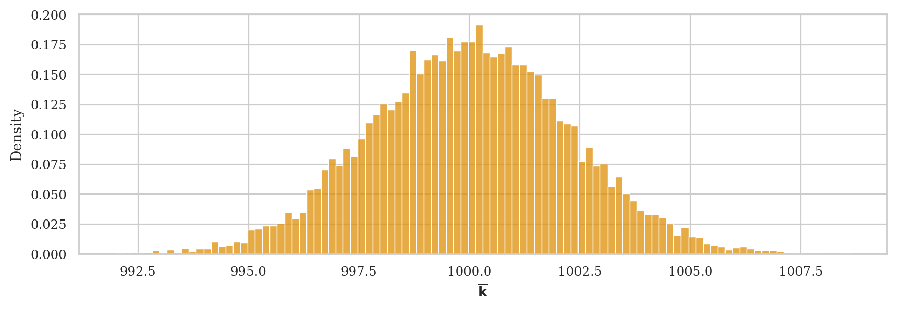
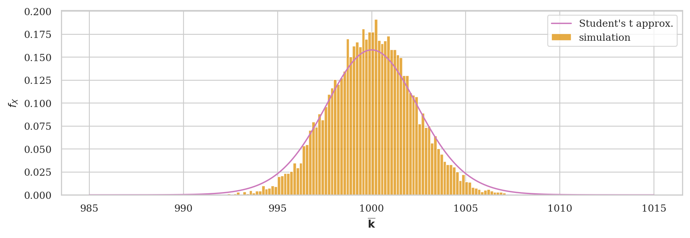
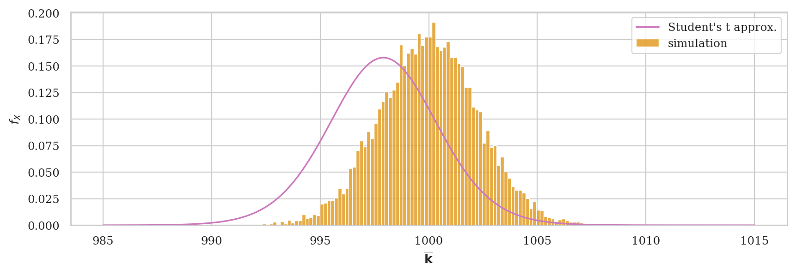
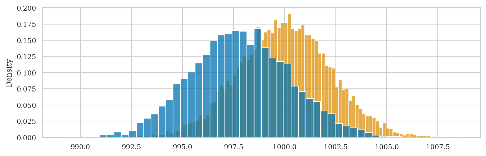
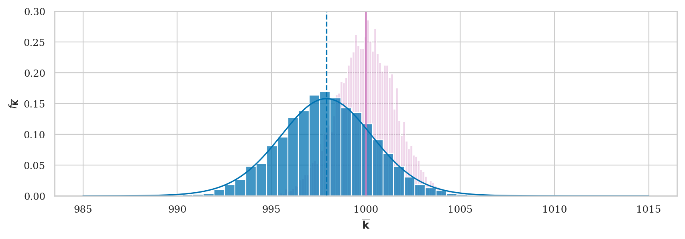

Sampling distribution of the mean details#
I find this is a very sneaky detail, and I have not seen anyone explain it in any other textbook.
CASE 1
norm(mu, sehat): the sampling distribution centred around the known population mean (as we can obtain from simulation when the population parameters are known). a hypothetical distribution centered on true population mean. This plot describes some hypothetical half-knowledge scenario, where the experimenter knows population mean mu, but doesn’t know the variance, so we use CLT or BOOT for the estimated dispersion, but show dist. centered at muK (the population mean).CASE 2
norm(xbar, sehat): the sampling distribution centred at the sample mean (which corresponds to the realistic, best effort scenario when we don’t know either the population mean or the population var) A realistic experimenter who only knowssamplewill make their “best guess” of the population mean asxbar = mean(sample). We can plot the sampling distribution centered at xbar.
Notebook setup#
# load Python modules
import os
import numpy as np
import pandas as pd
import matplotlib.pyplot as plt
import seaborn as sns
# Plot helper functions
from plot_helpers import plot_pdf
from plot_helpers import savefigure
# Figures setup
plt.clf() # needed otherwise `sns.set_theme` doesn't work
from plot_helpers import RCPARAMS
RCPARAMS.update({'figure.figsize': (10, 3)}) # good for screen
# RCPARAMS.update({'figure.figsize': (5, 1.6)}) # good for print
sns.set_theme(
context="paper",
style="whitegrid",
palette="colorblind",
rc=RCPARAMS,
)
# Useful colors
snspal = sns.color_palette()
blue, orange, purple = snspal[0], snspal[1], snspal[4]
# High-resolution please
%config InlineBackend.figure_format = 'retina'
# Where to store figures
DESTDIR = "figures/stats/estimators"
<Figure size 640x480 with 0 Axes>
# set random seed for repeatability
np.random.seed(42)
Estimators#
def mean(sample):
return sum(sample) / len(sample)
def var(sample):
xbar = mean(sample)
sumsqdevs = sum([(xi-xbar)**2 for xi in sample])
return sumsqdevs / (len(sample)-1)
def std(sample):
s2 = var(sample)
return np.sqrt(s2)
Particular sample: kombucha Batch 02#
kombucha = pd.read_csv("../datasets/kombucha.csv")
# kombucha
batch02 = kombucha[kombucha["batch"]==2]
ksample02 = batch02["volume"]
n = ksample02.count()
n
20
ksample02.values
array([ 995.83, 999.44, 978.64, 1016.4 , 982.07, 991.58, 1005.03,
987.55, 989.42, 990.91, 1005.51, 1022.92, 1000.42, 988.82,
1005.39, 994.04, 999.81, 1011.75, 992.52, 1000.09])
mean(ksample02)
997.9069999999999
^ underestimate of true population mean \(\mu_K = 1000\) …
std(ksample02)
11.149780314097285
^ overestimate of true population std \(\sigma_K = 10\)…
Population#
We assume the kombucha volume (when the production is regular/stable) can be modelled as the random variable \(K \sim \mathcal{N}(\mu_K=1000, \sigma_K=10)\).
from scipy.stats import norm
muK = 1000
sigmaK = 10
rvK = norm(muK, sigmaK)
ax = plot_pdf(rvK, xlims=[960,1040], rv_name="K")

True sampling distribution of the mean#
from stats_helpers import gen_sampling_dist
np.random.seed(42)
kbars40 = gen_sampling_dist(rvK, estfunc=mean, n=n, N=10000)
ax = sns.histplot(kbars40, stat="density", bins=100, color=orange, label="simulation")
ax.set_xlabel("$\overline{\mathbf{k}}$");

What we see above is the “ground truth” about the sampling distribution of the mean obtained through simulation.
All subsequent cases will try to approximate this properties of this distribution in one way or another.
CASE 0: Know population mean and variance#
If we know \(\mu_K\) and \(\sigma_K\) we can use the central limit theorem
muK
1000
seCLT = sigmaK / np.sqrt(n)
seCLT
2.23606797749979
from scipy.stats import norm
rvKbarCLT = norm(loc=muK, scale=seCLT)
ax = sns.histplot(kbars40, stat="density", bins=100, color=orange, label="simulation")
plot_pdf(rvKbarCLT, ax=ax, xlims=[985,1015], color=purple, label="Student's t approx.")
ax.set_xlabel("$\overline{\mathbf{k}}$");
Can I haz 90% confidence interval plz#
from scipy.stats import norm
# for 90% confidence interval we'll need
alpha = 0.1
quantiles = np.array([alpha/2, 1-alpha/2])
norm.ppf(quantiles, loc=muK, scale=sigmaK/np.sqrt(n))
array([ 996.32199548, 1003.67800452])
The above interval tells us the range of sample means we can expect to observe 90% of the time.
# true 90% CI for sample mean
[np.percentile(kbars40, 5),
np.percentile(kbars40, 95)]
[996.3769782356497, 1003.7065570446886]
So far so good, the CLT is working. We can say “good job mate” to de Moivre, Laplace, and Lyapunov and move on to the next case.
Case 1: Population mean is known, but variance is unknown#
# estimate for the standard deviation
std(ksample02)
11.149780314097285
# estimate for the standard error of the mean
sehat = std(ksample02) / np.sqrt(n)
sehat
2.4931666716510485
from scipy.stats import t
rvKbar1 = t(df=n-1, loc=muK, scale=sehat)
ax = sns.histplot(kbars40, stat="density", bins=100, color=orange, label="simulation")
plot_pdf(rvKbar1, ax=ax, xlims=[985,1015], color=purple, label="Student's t approx.")
ax.set_xlabel("$\overline{\mathbf{k}}$");

90% confidence interval of sample means we can expect to observe#
from scipy.stats import t
# for 90% confidence interval we'll need
alpha = 0.1
quantiles = np.array([alpha/2, 1-alpha/2])
t.ppf(quantiles, df=n-1, loc=muK, scale=sehat)
array([ 995.6889837, 1004.3110163])
The above interval tells us the range of sample means we can expect to observe 90% of the time.
# true 90% CI for sample mean
[np.percentile(kbars40, 5),
np.percentile(kbars40, 95)]
[996.3769782356497, 1003.7065570446886]
So far so good, Student’s \(t\)-distribution seems to be a bit conservative (giving a wider confidence interval than necessary), but hey if you’re getting the coverage you promised, then we can say “good job mate” to Gosset.
Case 2: Both population mean and variance are unknown#
Tool 1: Analytical approximations based on sample ksample02#
If we we plug in \(\overline{\mathbf{x}}\) for \(\mu\) and \(s_{\mathbf{x}}\) for \(\sigma\), in Gosset’s what do we get?
obsmean02 = mean(ksample02)
obsmean02
997.9069999999999
obsvar02 = var(ksample02)
obsvar02
124.31760105263136
# standard error estimated from `ksample02`
n = ksample02.count()
seKhat02 = np.sqrt( obsvar02 / n )
seKhat02
2.4931666716510485
from scipy.stats import t
df = n - 1 # degrees of freedom
rvKbarA = t(df, loc=obsmean02, scale=seKhat02)
ax = sns.histplot(kbars40, stat="density", bins=100, color=orange, label="simulation")
plot_pdf(rvKbarA, ax=ax, xlims=[985,1015], color=purple, label="Student's t approx.")
ax.set_xlabel("$\overline{\mathbf{k}}$");

90% confidence interval for the population mean#
from scipy.stats import t
alpha = 0.1
quantiles = np.array([alpha/2, 1-alpha/2])
t.ppf(quantiles, df=n-1, loc=obsmean02, scale=sehat)
array([ 993.5959837, 1002.2180163])
Tool 2: Bootstrap estimate based on sample ksample02#
from stats_helpers import gen_boot_dist
# true sampling distribution
ax = sns.histplot(kbars40, stat="density", bins=100, color=orange, label="simulation")
# boostrap estimated sampling dist from sample `ksample02`
kbars02_boot = gen_boot_dist(ksample02, estfunc=mean)
sns.histplot(kbars02_boot, bins=50, stat="density", ax=ax)
<Axes: ylabel='Density'>

90% confidence interval for the population mean#
[np.percentile(kbars02_boot, 5),
np.percentile(kbars02_boot, 95)]
[993.985925, 1001.9336249999998]
Combined picture for CASE 2#
A realistic experimenter who only knows ksample will make their “best guess” of the population mean as kbar = mean(ksample), then draw the sampling distribution centered at kbar, as in this figure:
I think nobody wants to shows this kind of figure because it looks really bad. Look how far off the CLT and bootstrap approximations are relative to the true population mean mu=1000.
fig, ax = plt.subplots()
# true sampling distribution
kbars40 = gen_sampling_dist(rvK, estfunc=mean, n=40)
sns.histplot(kbars40, stat="density", ax=ax, bins=100,
label="simulation", alpha=0.3, color="m")
# populatin mean
ax.axvline(rvK.mean(), linestyle="-", color='m')
# particular sample
n = ksample02.count()
obsmean02 = mean(ksample02) # sample mean
ax.axvline(obsmean02, linestyle="--", color='b')
obsvar02 = var(ksample02)
print("sample mean =", obsmean02)
print(" sample var =", obsvar02)
print(" sample std =", np.sqrt(obsvar02))
# analytical approximation based on `ksample02` mean and var
from scipy.stats import t
df = n - 1 # degrees of freedom
seKhat02 = np.sqrt( obsvar02 / n )
rvKbarA = t(df, loc=obsmean02, scale=seKhat02)
plot_pdf(rvKbarA, ax=ax, xlims=[985,1015], color=blue, label="Student's t approx.")
# boostrap approx
kbars02_boot = gen_boot_dist(ksample02, estfunc=mean)
sns.histplot(kbars02_boot, bins=30, stat="density", ax=ax, label="boostrap approx.")
# add x-axis label and rm legend
ax.set_xlabel("$\overline{\mathbf{k}}$")
ax.set_ylabel("$f_{\overline{\mathbf{K}}}$")
ax.get_legend().remove()
sample mean = 997.9069999999999
sample var = 124.31760105263136
sample std = 11.149780314097285
